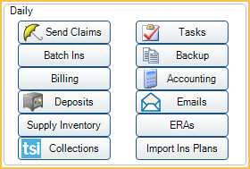
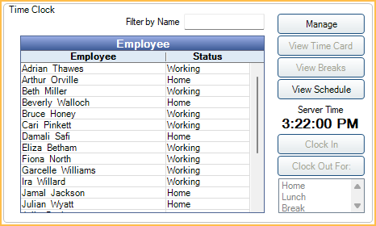

Manage Module
The Manage Module contains miscellaneous management functions that do not apply to any single patient.

 See our Manage Module Playlist
See our Manage Module Playlist
Daily Area
Find tools to help manage the day-to-day operations of the practice in the Daily area.
- Send Claims: View a list of claims waiting to be sent and quickly batch send or print. This window also shows history of sent or printed claims.
- Batch Ins: Enter Batch Insurance Payments.
- Billing: Print or email batch statements and set billing defaults. See Billing.
- Deposits: Create and manage deposit slips. Deposit slips can be printed with bank account information.
- Supply Inventory: Open Supply Inventory to track suppliers, supplies, orders, and equipment.
- TSI Collections: Launch the TSI Collections integration. Transworld Systems Inc. (TSI) offers billing and collection services to dental practices.
- Tasks: Opens the Tasks. Tasks can be used for intra-office communication, settings reminders, and more.
- Backup: Create a backup of your Open Dental database using the built-in Backup Tool.
- Accounting: Open the Accounting feature used to set up a chart of accounts and track expenses, income, assets, liabilities and equity.
- Email Inbox: Open the Email Client. You can set up email accounts that your practice uses to send and receive emails using Open Dental.
- ERAs: Open the ERAs window to process and manage ERAs.
Time Clock
In the Manage Module, at the upper-right, is the Time Clock area.
Employees can use the Time Clock to clock in or out of work.
Messaging
In the Manage Module, at the bottom, is the Messaging area.

Use Messaging Buttons to send internal text, light, and sound messages to any workstation in the office.